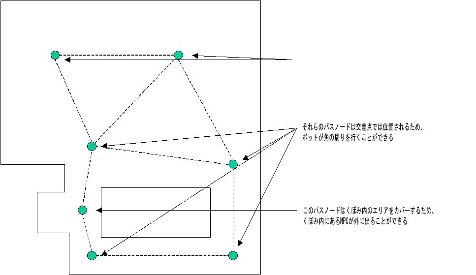

UDN
Search public documentation:
UsingWaypointsJP
English Translation
中国翻译
한국어
Interested in the Unreal Engine?
Visit the Unreal Technology site.
Looking for jobs and company info?
Check out the Epic games site.
Questions about support via UDN?
Contact the UDN Staff
中国翻译
한국어
Interested in the Unreal Engine?
Visit the Unreal Technology site.
Looking for jobs and company info?
Check out the Epic games site.
Questions about support via UDN?
Contact the UDN Staff
Waypoint の使用
ドキュメント概要: パス ノードのセットアップと AI パスの使用に関するガイドとレファレンス。 ドキュメントの変更ログ: Richard Nalezynski? により作成。概観
このドキュメントは、レベル内でナビゲーション ネットワークをどのようにしてセットアップすれば、NPC がレベル内のいかなるポイントへ効率的にナビゲートできるかを解説します。このドキュメントは、レベル デザイナーを対象にしています。より技術的なディスカッションは、 ウェイポイントテクニカルガイド を参照してください。ベーシック パス
パス ノード
レベル デザイナーはPathNodes (NavigationPoint のサブクラス) を、NPC が上を歩くことができるようなレベル内のサーフェス、または NPC が泳ぐことのできるようなボリュームに設置します。==PlayerStarts== もまた NavigationPoints であり、同じようなナビゲーション関数を実行します。さらにパスをビルドする際に、 InventorySpots は自動的にレベル内のすべてのピックアップの場所に設置されます (これらは非可視ですが、そこへのパス接続は可視となっています)。
PathNodes が接続するには、 1200 Unreal ユニット以上離れていてはいけません (この値を変更するため、プログラマは nPath.h の MAXPATHDIST を変更することができます)。2 つの NavigationPoints がお互い近過ぎる (重複する) と、AI ナビゲーションの問題の原因となるので、避けなければいけません。 PathNodes を設置する場合、レベルのすべてのエリアが PathNode または何らかの NavigationPoint にカバーされているようことを確認してください。NPC が 1200 ユニット未満の PathNode にまったく妨げられずに (例: 障害物などがなく、避けることなく) 歩いていくことができれば、エリアはカバーされていることになります。

パスのビルド
PathNodes を設置した後、レベル デザイナーは、 Build (ビルド) メニューから AI Paths (AI パス) を選ぶことで (または、 Build (ビルド) メニューから Rebuild All(すべてをリビルド) を選択してフル リビルドをすることで) NavigationPoints 間の接続をビルドすることができます。どのパスがビルドされるかの文字サイズの範囲は、パスのビルド(ファイルの [Engine.Engine] セクションにあるScoutClassName ini エントリにより定義されます)に使用されているScout クラスのPathSizes 配列により決定されます。
レベルがたくさんのパスを持つと、すべてのパスをリビルドするのに時間がかかります。パスの設置の微調整をするには、 Build Options (ビルド オプション) メニューの Build Changed Paths (ビルド変更されたパス) ボタンを使用します。これは、追加された、削除された、または移動された NavigationPoints 間のパスのみをリビルドします。しかしながら、保存してレベルを再生する前に、フル パスリビルドが必要となります。
ビルドされたパスをビューする
一度パスがビルドされると、どのビューポートにもある Toggle Show Flags (フラグ表示の切り替え) メニューにある Show Paths(パスを表示) オプション フラグを使用することにより、さまざまなレベル ビュー ウィンドウでビューすることができます。 パスはラインとして 1 つのNavigationPoint からもう 1 つの NavigationPoint へ表示されます。NPC がパスをどちらの方向へも行き来できる場合、それぞれの方向を指し示す矢印を持つ 2 つのラインがあります。そうでない場合、ラインは、パスでどちらの方向に進むことができるかという矢印を示します。
パスを使用する NPC がたとえ小さくても、 PathNode 位置を常に微調整して、接続するパスをできる限り幅広くすることが良いでしょう。NPC は角をスムーズに曲がる、またはパスを横向きで行ったり来たりするので、広いパスは結果的により自然な移動に見えます。
パス カラーリング
一度ビルドされると、パスはさまざまな色で表示され、パスに関する大切な情報を示します。ナビゲーション グラフ エッジのデフォルト パス カラーリングは以下のように定義されます。- オレンジ色 - 空を飛ぶパス、狭い
- 明るいオレンジ色 - 空を飛ぶパス、広い
- 明るい紫色 - (通常のジャンプ能力よりもより高い) ハイ ジャンプを必要とする
- 青色 - 狭いパス
- 緑色 - 通常の幅
- 白色 - 幅広いパス
- ピンク色 - 非常に幅広いパス
- 黄色 - 強制されたパス
- 紫色 - (使用するのに「知力」が必要となる)「高度な」パス
- 赤色 - 「一方通行」のパス (例: ノード A->B へ行くが、B->A へは行かない reachspec がある) (備考: 最近のビルドでは、一方通行の状況を簡単に見つけられるように赤色の破線に変更された。)
パスのデバッギング
パスのビルド後、ウィンドウがパスエラーおよび警告と共にエディタにポップアップします。エラーをクリックすると、その NavigationPoint を見ることができます。ウィンドウは Tools (ツール) の Check map for errors...(マップのエラーをチェックする) を選択することでもアクセスすることができます。 レベルが完全にパスされ、パスが定義された後、 Tools (ツール) メニューの Review Paths (パスをレビュー) オプションを使用します。以下のアイテムがチェックされます。 AI NPC が混乱していたり、変な挙動をしていたりする場合は、以下のコンソール コマンドが使用可能です。-
Viewclass Pawn- 問題の AI NPC をビューします。 -
ShowDebug- AI NPC が何を考え、どのパスを進んでいるかを見ます。 -
RememberSpot- レベルにいる間、ナビゲーション パスをチェックする際に場所をマークします。その後、ShowDebug(他をビューせずに) を使用することで、マークされた場所に継続的にアップデートされたパスを表示します。
高度なパス
Doors
Door NavigationPoints は、ドアとしての役割を果たす Mover と同時に設置されるべきです (その位置に基づいて、2 つのエリア間の移動を許可したりブロックしたりします)。 Door は影響を受けるエリアの中心に設置されるべきです (通常、ドアに使用される実際の静的メッシュの真ん中ですが、地面に触れるぐらい低い場所です)。また、必要に応じてアップデートされるべき Door NavigationPoint の大事なプロパティがいくつかあります。
- DoorTag - この
Doorが関連付けられるMoverのタグです。 - DoorTrigger -
Doorがトリガされると、これがDoorを開けるトリガ アクタのタグです。 - bInitiallyClosed -
Moverのデフォルト状態が移動を許可するかどうか (false の場合) または防ぐか (true の場合、デフォルト値) です。 - bBlockedWhenClosed -
Moverが閉じていると、NPC にはそれを開ける方法がありません (デフォルトで false)。
Movers は bAutoDoor プロパティを持つようになりました。TRUE に設定されると、 Door= PathNode はその Mover に自動的に生成されます。これは、ほとんどの Doors で動作します。
JumpPads
JumpPads は、それらに触れるいかなる Pawn をも指定された方向へ投げます。 JumpPad の ForcedPaths[] 配列プロパティの最初の入力内で、目的地 PathNode を指定することにより、 JumpPads はセットアップされます。適切なジャンプ速度は、パスがリビルドされる際に自動的に計算されます。何らかの理由で自動的に生成される速度に問題がある場合は、 JumpPad の JumpModifier ベクトル プロパティの設定が可能です。
JumpDests
ジャンプして上がるには高すぎる、しかしながらその下のパスにリンクしているような場所では、JumpDests が PathNodes の代わりに使用されるべきです。 JumpSpots は低重力にある NPC に、または何らかのジャンプ ブーストがある場合に使用されます。ボットが JumpSpot にジャンプするパスは、 JumpSpot を ForcedPath[] 配列プロパティ入力の 1 つに持っていなければいけません。
Lifts
リフトとして使用されるMover は、決して BumpOpenTimed 状態を使用してはいけません (代わりに StandOpenTimed を使用します)。 Lifts として使用される Movers は、それらに 2 タイプの NavigationPoints が関連付けられています。 LiftCenter はリフトの中心に設置されるべきです。 LiftExit は、==Lift== からの各出口に設置します (しかし、そこに立っている NPC が Lift を妨げないように十分距離が取られていなければいけません)。 LiftCenter と LiftExits の両方とも LiftTag プロパティを持っています。これは、 Mover のタグに設定されなければいけません。さらに、リフトがトリガされると、 LiftCenter の LiftTrigger プロパティ内のトリガしているアクタのタグを付けます。 LiftExits も任意のプロパティである SuggestedKeyFrame を持ち、これは LiftExit が使用できる際に、ムーバーのキーフレーム番号に設定することができます。これは、いくつかの状況で NPC によるナビゲーションを改善させる場合があります。
Ladders
(LadderVolume が選択されている際に、方向を示す矢印として表示される WallDir プロパティを調整することにより) LadderVolumes は、登られる壁に面して正しい方向に置かなければいけません。大抵の場合、レベル デザイナーは、パスがビルドされた際に Ladder NavigationPoints が自動的に LadderVolume の上と下に追加されるようにします。しかしながら、自動的に設置される Ladder に問題がある場合は、レベル デザイナーは LadderVolume bAutoPath プロパティを false に設定した後に、手動で Ladder を設置することができます。Ladder の中心は LadderVolume 内になければいけません。==LadderVolume== はその下部分が床に触れていて、上部分は少なくとも Ladder を使用する一番大きな NPC の高さ分エッジがはみ出ていなければいけません。
VolumePathNode
VolumePathNodes は、ボリュームによりナビゲーションをサポートするのに役に立ちます。例えば、水泳時や飛行時などです。VolumePathNodeの衝突シリンダーはナビゲート可能なボリュームとして表記されます。パスのビルド中、衝突シリンダーは障害物が到達するまで、初期の半径およびレベルデザイナー(StartingRadius およびStartingHeight プロパティを使用)により指定された高さから調節されます。これは、最高の結果を得るため、位置(ナビゲート可能な中点などからの開始)やVolumePathNode のシリンダーサイズの開始を調節するのに有意義です。VolumePathNodes は、他のオーバーラッピングしているVolumePathNodesに接続されます。また、NavigationPoints もそれらのボリュームに接続されます。さらに、VolumePathNode シリンダの直下にあるNavigationPoints は、パスのビルド中に接続性がテストされます。VCTF-SandstormなどのようなUTGame ビークルレベルは、VolumePathNodesを使用して実演されます。Cover Links
CoverLinks は Gears of War のために開発されました。以下の設定が使用されます。 - bCircular = 円柱の回りのカバーのような、円形のカバーを作成するにはこれをチェックします。通常は、円柱のどちらかの側に位置して、お互いを向くように置かれた 2 つのカバー ノードで行われます。
- bClaimAllSlots = AI がここにカバー (避難) した場合、他の AI はこのスポットに避難しようとしません。
- MaxFireLinkDist = カバー スロット間で AI ファイア リンクを作成するために、カバー スロットが他のカバー スロットをクエリーする最大の距離です (Gears AI にそのカバーにいる間、どこを撃てばいいかを教えます)。
- bCanPopUp = スロットが、アクタが立ち上がりそこから撃つのに適しているかどうかをデザイナーに教えます。
- bAllowPopUp = アクタが立ち上がり、そこから撃つことができるようにしたい場合、このフラグを設定します。
- bAllowMantle = アクタがこのカバーを登ることができるようにしたい場合、このフラグを設定します。
- bAllowCoverslip = アクタがこのカバーをスリップできるようにしたい場合、このフラグを設定します (エッジのみで動作します)。
- bAllowSwatTurn = アクタがこのカバーへ、またはこのカバーからスワット ターンをできるようにしたい場合、このフラグを設定します (これも、エッジのみで動作します)。
パスサイズの変更 (プログラマー向け)
パスタイプはコード(JumpやFlyingノードのため)およびScout (エンティティの異なるサイズのため)のデフォルトプロパティの両方により定義されます。 異なるサイズを定義するには、Scout クラスにあるPathSizes 配列を変更します。こちらがデフォルト値になります :
PathSizes(0)=(Desc=Human,Radius=48,Height=80)
PathSizes(1)=(Desc=Common,Radius=72,Height=100)
PathSizes(2)=(Desc=Max,Radius=120,Height=120)
PathSizes(3)=(Desc=Vehicle,Radius=260,Height=120)